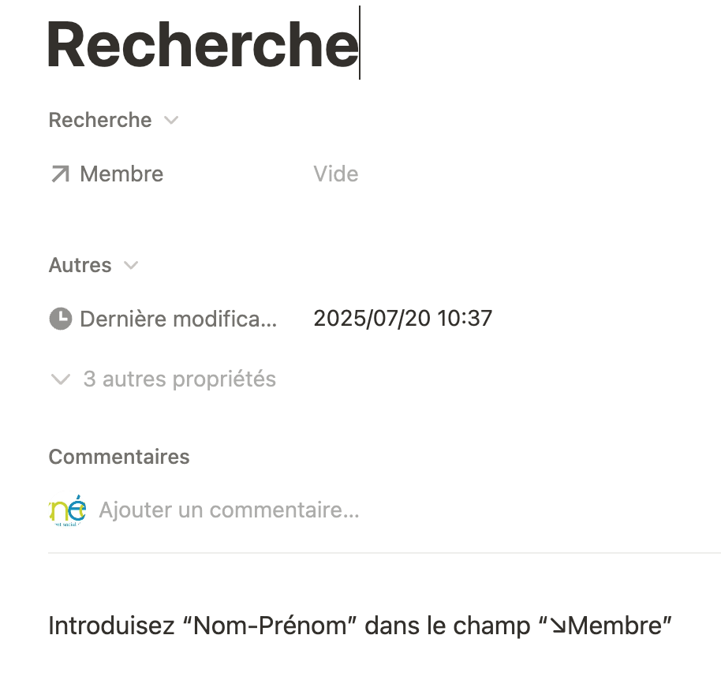

Recherche
Pour effectuer une recherche, voici les étapes :
Cliquez sur le bouton Recherche et vous obtenez :
- 
à droite de membre vous introduisez le nom du membre recherché

Vous sélectionnez le membre
Vous cliquez sur le membre et vous obtenez sa fiche
- Pas de modification autorisée
Un clic en-dehors de la fiche pour revenir au départ